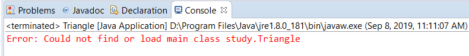

Could not find or load main class XX.XX
1. 错误
在eclipse中发生错误:Error: Could not find or load main class study.Triangle

2. 起源
今天上午给一个刚刚学习java的妹子去解决问题, 文科生, 一开始环境变量没有装好, 装了一下环境变量, 环境变量好了之后, 过了一会, 则出现了上面那个错误.
3. 解决方法
1. 测试环境变量
首先在桌面上写了一个Helloworld 程序, 用javac测试了一下, 没有任何问题.
然后又回到eclipse始终没有发现任何错误, 百思不得姐
2. 真正解决
我想着重启一下看一看, 结果发现了一个很神奇的事情. 她的workspace目录竟然是C:/robot.keyPress(KeyEvent.VK_H);
我当时的心情是这样的
WorkSpace的目录名竟然是一行代码
当机立断, 立马改成了workspace, 然后重新打开工作区, 成功
4. 原因
1. 测试
回来我在想到底是不是目录的问题, 我就创建了一个跟她一模一样的目录. 果不其然, 是这样子
2. 再测试
我又想到底是这个目录中的 . 造成的, 还是 ; 造成的, 我将; 删掉重新打开, 然后错误消失了
结论
在读取的时候 ; 直接停止了读取.
总结
技术很重要, 但是基本东西也很重要.
本博客所有文章除特别声明外，均采用 CC BY-NC-SA 4.0 许可协议。转载请注明来自 Lutong99！
评论